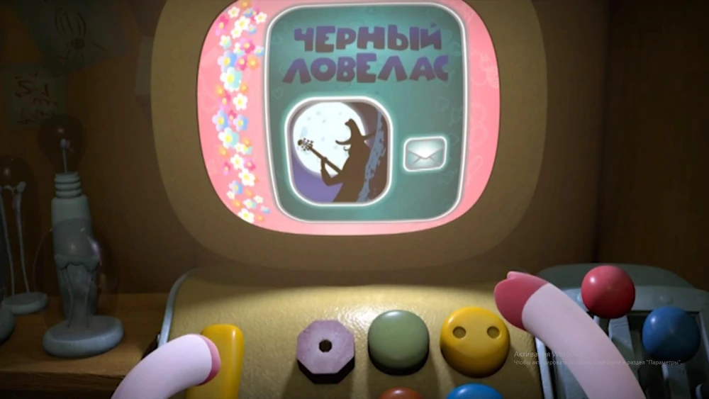
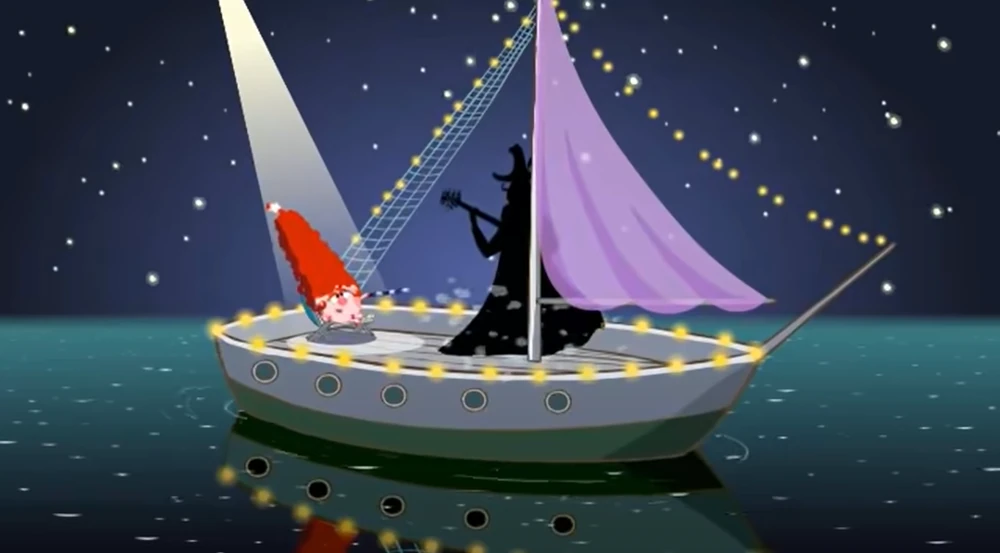
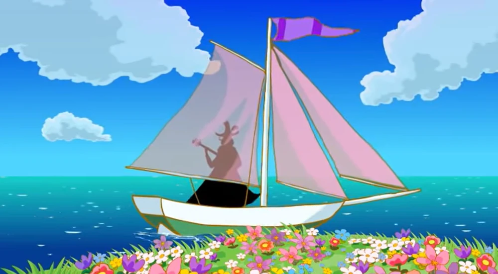

Первый раз появился в серии «Страшилка для Нюши». Считается, что он своей игрой на гитаре завораживает женщин, и они сходят с ума, но на самом деле Чёрного Ловеласа выдумали друзья Нюши — Крош и Ёжик, когда рассказывали Нюше страшилку. После рассказанной истории Нюша встретила под большой сосной персонажа, у которого был виден лишь чёрный силуэт. При вопросе: «Вы Чёрный Ловелас?» Нюша получила ответ: «Если вам так угодно, мадемуазель». Он пообещал Нюше вернуться, когда она вырастет, после знакомства с ней удалился и появлялся потом только в её воображении. Нюша до сих пор его ждёт.
Внешность
Судя по силуэту, имеет длинные усы и волосы до плеч, шляпу с пером, плащ и пятиструнную гитару. Поскольку во всех сериях фигурирует его темный силуэт (и ночью, и днём), лицо Чёрного Ловеласа невозможно увидеть.
Появления
«Страшилка для Нюши»
«Снотворец»
«Её звали Нюша»
«Куда приводят желания»
«Два волшебника»
«Вид сверху»
«Аленький цветочек»
«Принцесса в поиске»
«Контакт»
«Новый год по-взрослому!»
«Аватарка» (Бараш использует фотографию Ловеласа)
Интересные факты
Черныйкосплей
В серии «Страшилка для Нюши» играет произведение «Sarabande A Minor» Иоганн Себастьяна Баха, которое в реальности исполняет «Vladimir Kuznetsov And The Associates».
Иногда Чёрный Ловелас появляется в некоторых сериях под именем принца.
Бараш немного ревнует к Чёрному Ловеласу. В серии «Снотворец» он немного медлит, прежде чем вызвать его для Нюши. Также из-за этого в серии ПК «Принцесса в поиске» он подстраивает свой аватар и логин под Чёрного Ловеласа (в эпизоде АЦГ «Аватарка» поэт пытается скрыть свое настоящее имя под ником «Неизвестный красавец», параллельно (опять же) ставя себе аватарку с этим загадочным персонажем).
Нюша пародировала Чёрного Ловеласа в серии «Контакт».
Мелодия, которую Чёрный Ловелас обычно играет на своей гитаре:


